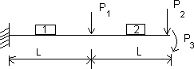
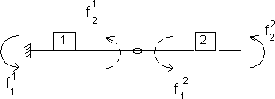
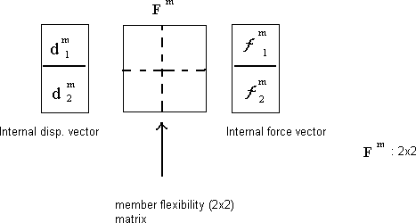

Matrix Force MethodSimulation: Matrix Force Method for the two span beam. Complete each step in order. A new step appears only after the current input is correct.  ➜
Step 1: Click on Bring to display the experiment diagrams.
➜
Loaded beam: the original two-span beam carrying P1 and P2. Released beam: releases show the independent internal force actions. Flexibility matrix: relates released-force actions to member displacements.   Loaded beam: shows the original two-span structure and applied loads. Released beam: shows the independent force actions used for analysis. Flexibility matrix: connects force actions with displacements. Given StructureCondition: Beam with two equal spans L, loads P1 and P2, and end moment P3. Step 2: Enter Input ValuesStep 3: Identify Vectors
{P} =
P1P2P3
{u} =
u1u2u3
{f} = [b]{P} Enter the order of force transformation matrix [b] Step 4: Member FlexibilityFor the beam element, enter the outside multiplier of [F].
[F] = k
2-100-120-1002-10-1-12
Step 5: Transformation Matrix[b] is obtained from the force transformation relation.
[b] =
L2L1-L0-10L1001
Enter selected values of [b]. Step 6: Total Structural Flexibility[F]TS = [b]T[F]c[b]
[F]TS = L/(6EI)
2L²5L²3L5L²16L²12L3L12L12
Enter selected terms of [F]TS. Step 7: External Displacement Vector{u} = [F]TS{P} Use the first row of the matrix to calculate u1. Enter u1. u1 = (2L³P1 + 5L³P2 + 3L²P3)/(6EI) Step 8: Complete Displacement VectorNow calculate u2 and u3 from the remaining rows. Simulation CompletedThe displacement vector has been obtained using: {u} = [F]TS{P} |